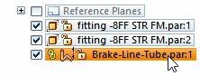
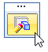
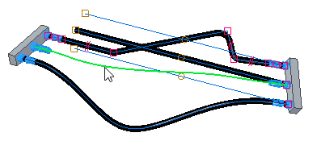
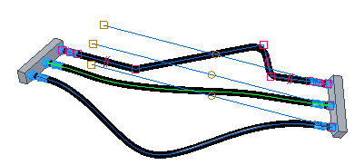
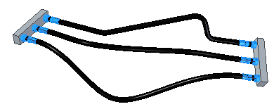

Redefine a tube path
-
Select the tube in the top level assembly.

-
Click the Edit Definition button.

-
On the Tube command bar, click the Deselect button .
-
Select the new path for the tube.

-
On the Tube command bar, click the Accept button
 and then click the Finish button.
and then click the Finish button. 
-
Close XpresRoute.
The tube is created along the new path.
